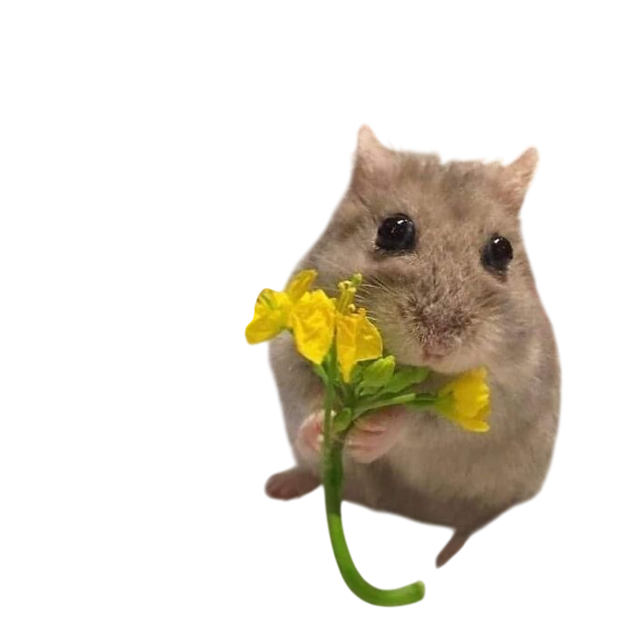
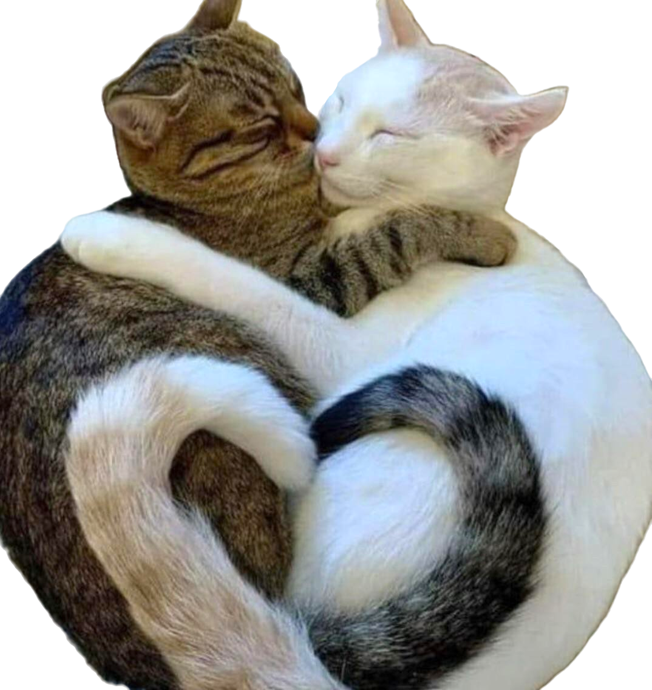

Un pequeño detalle para ti...
Cada flor es un pequeño recordatorio
de lo especial que eres 💖

Tengo una sorpresa más para ti ✨

Querida princesa Angie
Los momentos más bonitos no siempre son los más grandes. A veces son las risas inesperadas, las conversaciones largas que parecen no tener fin, los pequeños detalles que casi nadie nota o simplemente el hecho de compartir tiempo juntos sin necesidad de hacer nada especial.
Me he dado cuenta de que son precisamente esos instantes sencillos los que más se quedan en el corazón, los que uno recuerda incluso cuando todo cambia. Porque no se trata de lo que se hace, sino de con quién se vive.
Cada recuerdo contigo se guarda como algo especial, como si tuviera un brillo distinto. Y sinceramente, espero que todavía nos queden muchísimos momentos más por vivir, más historias que contar y más recuerdos que atesorar con el tiempo.
Porque al final, lo más valioso siempre será eso: los momentos compartidos, las emociones sinceras y todo aquello que, sin darnos cuenta, va construyendo algo bonito entre nosotros.
Con cariño,
Axcel 💛